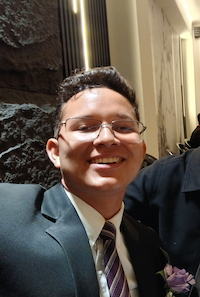

Juan Pernia | WDD 130

My name is Juan Pernia. I am from Maracaibo, Venezuela. I study at BYU-Pathway Worldwide and I am learning web development and programming. I am an English teacher, and I enjoy helping students improve their English skills. I also completed a TESOL/TEFL certification. In the future, I want to continue my education, build a successful career, and learn more about aviation and robotics. I am a hardworking person who likes learning new things and helping others.